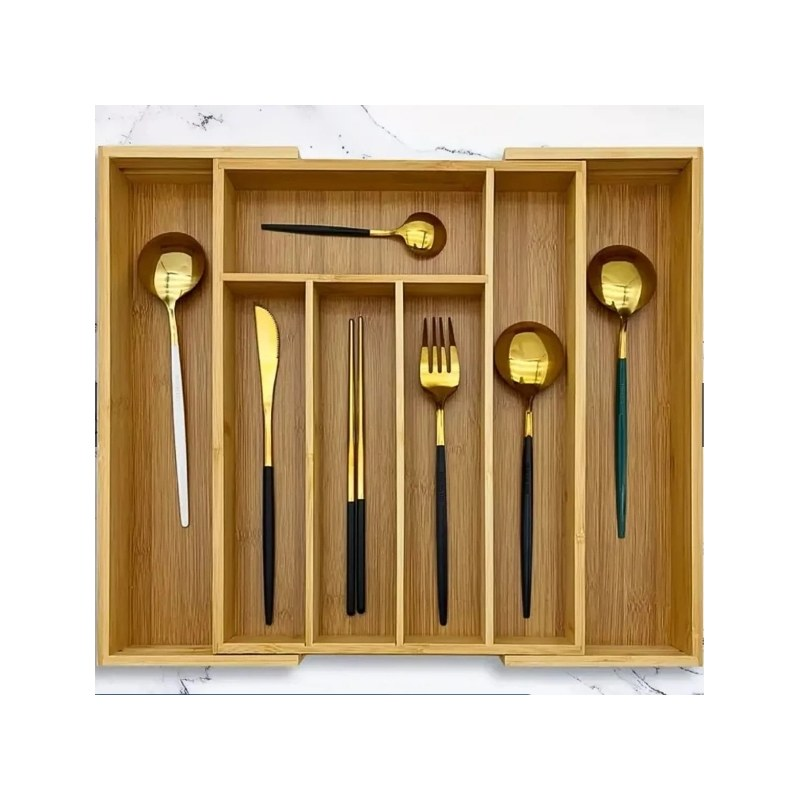

Cozinha
Porta-talheres de bambu extensível
Ele abre até ocupar a largura da gaveta, então nada escorrega para os lados, e as 7 divisórias separam talheres, conchas e utensílios.
Ver na Shopee
Ele abre até ocupar a largura da gaveta, então nada escorrega para os lados, e as 7 divisórias separam talheres, conchas e utensílios.
Ver na Shopee